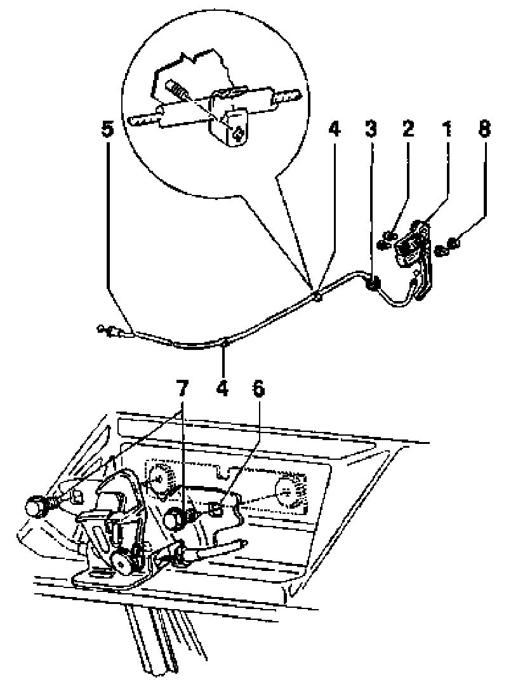

Hood Latch Release Cable: Service and Repair
Hood, assembly, Hood lock cable, removing and installing
WARNING!
- Do not re-use fasteners that are worn or deformed in normal use.
- Some fasteners are designed to be used only once, and are unreliable and may fail if used a second time. This includes, but is not limited to, nuts, bolts, washers, cirdips and cotter pins. Always follow recommendations in this manual- replace these fasteners with new parts where indicated, and any other time it is deemed necessary by inspection.

1 - Release lever
- Cable attached
2 - Self-tapping screw
3 - Sealing grommet
4 - Clip
5 - Cable
6 - Lock
- Cable attached
7 - Self- locking bolt
- Always replace
- l4Nm (10 ft lb)
8 - Spreader clip
Removing
- Loosen screws -2-.
- Disconnect release lever - 1-.
- Loosen bolts -7-.
- Remove cable.
Installing
- Verify that lock assembly -6- has not been deformed.
- Verify that hood striker is aligned with and centered in lock -6-.
- Tighten bolts -7- to 14 +/- 1.5 Nm (10 +/- 1 ft.lb).
- Verify correct installation and adjustment of lock carrier and attachments, lock -6- and anti-theft plate.